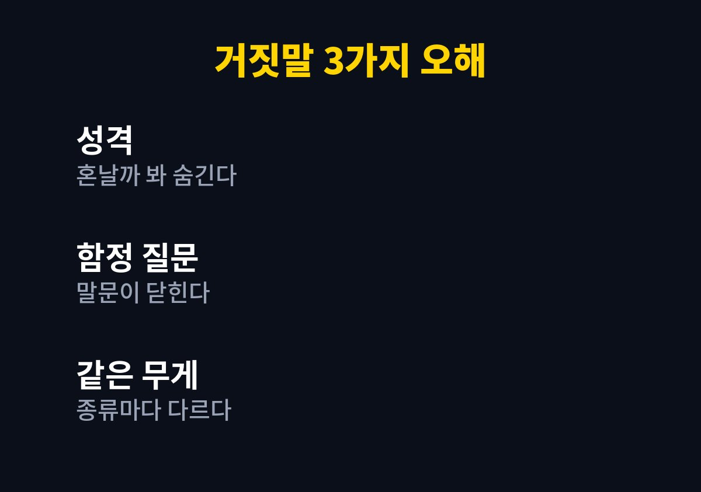
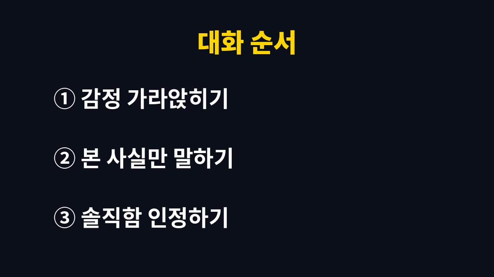

아이 거짓말 대처의 출발점은 거짓말을 한 이유를 먼저 보는 것이다.
거짓말이 곧 성격 문제라는 생각을 내려놓으면 혼내는 말이 달라지고, 아이도 다음에 사실을 말할 여지가 생긴다.
자주 헷갈리는 오해 세 가지를 짚고 집에서 해 볼 대화 순서를 적는다.
컵을 깨 놓고 모른다고 하는 아이는 속이려는 것보다 혼나는 상황이 두려운 경우가 많다.
이때 이유를 캐묻듯 다그치면 아이는 다음에 더 능숙하게 숨긴다.
잘못을 인정하면 혼난다는 경험이 쌓이면 아이는 사실을 말하는 것이 손해라고 배운다.
반대로 솔직하게 말했을 때 문제를 같이 해결해 준 경험이 있으면 숨길 이유가 줄어든다.
그러니 거짓말을 발견한 순간의 첫마디가 이후 대화 분위기를 정한다.
이미 답을 알면서 일부러 물어보는 방식은 아이에게 함정처럼 느껴진다.
물감이 묻은 손이 보이는데도 누가 그랬는지 묻는다면 아이는 사실을 말해도 안전하다고 느끼기 어렵다.
차라리 본 것을 그대로 말해 준다.
아이가 숨기는 이유를 알면 대응 방법도 정해진다.
감정이 올라온 순간에는 판단이 흐려진다.
나도 화가 난 채로 추궁했다가 아이가 입을 닫아 버려서 저녁에 다시 이야기한 적이 있다.
시간을 두고 말하는 편이 결과가 낫다.
예를 들어 식탁 위 과자가 사라진 날 아이에게 네가 먹었니 하고 따지면 아이는 아니라고 답하기 쉽다.
과자 봉지가 비어 있네, 먹고 싶었나 보다라고 말하면 대화의 방향이 달라진다.
상상과 현실이 섞여 나오는 이야기, 칭찬받고 싶어서 부풀린 말, 잘못을 감추려는 말은 이유가 서로 다르다.
이유가 다르면 대응도 달라져야 한다.
아이의 나이가 어릴수록 상상과 사실의 경계가 흐릿해서 사실이 아닌 말을 거짓말로 의도해서 한 것이 아닐 수도 있다.
이 경우에는 혼내기보다 그건 이야기 속 일이네, 실제로는 이랬지 하고 짚어 주는 정도로 충분하다.
| 거짓말의 종류 | 아이 속마음 | 부모의 대응 |
|---|---|---|
| 상상 이야기 | 재미있는 장면을 말하고 싶다 | 이야기로 받아 주되 사실과 구분해 준다 |
| 부풀리기 | 인정받고 싶다 | 결과보다 노력을 먼저 알아봐 준다 |
| 잘못 감추기 | 혼나는 것이 무섭다 | 사실을 말한 것부터 인정해 준다 |
| 반복되는 거짓말 | 도움이 필요한 신호일 수 있다 | 전문가 상담을 고려한다 |

표의 마지막 줄처럼 같은 거짓말이 오래 반복되거나 다른 걱정스러운 행동이 함께 보이면 집에서만 해결하려 하지 않는다.
학교 선생님이나 소아청소년과, 지역 아동 상담 기관에 상황을 설명하고 의견을 듣는 것이 순서다.
오해를 걷어 냈다면 실제 대화에서 쓸 순서가 필요하다.
순서는 감정 다스리기, 사실 말하기, 이유 듣기, 수습 정하기 흐름으로 이어진다.

다만 이 순서가 모든 아이에게 맞는 정답은 아니다.
기질과 나이, 집안 분위기에 따라 효과는 다르고, 한 번에 바뀌지 않는 것이 보통이다.
감정을 가라앉히는 시간은 길지 않아도 된다.
물 한 잔을 마시거나 잠깐 다른 방에 다녀오는 정도로도 말투가 달라진다.
아이에게는 지금은 너도 나도 화가 났으니 조금 있다가 이야기하자고 미리 말해 준다.
그리고 약속한 시간에 정말로 이야기를 꺼내야 아이가 그 말을 믿는다.
이번 주에는 아이가 사실을 말했을 때 그 사실 자체에 먼저 반응해 본다.
거짓말이 오래 이어지거나 물건을 반복해서 가져오는 등 걱정스러운 행동이 겹치면 소아청소년과나 아동 상담 기관에 상담하는 편이 안전하다.
부모가 먼저 사소한 실수를 솔직하게 말하는 모습을 보여 주는 것도 방법이다.
※ 2026년 기준 공식 자료를 바탕으로 정리한 일반 정보이며, 아이의 발달이나 건강에 걱정이 있다면 소아청소년과 등 전문가와 상담하길 바란다.